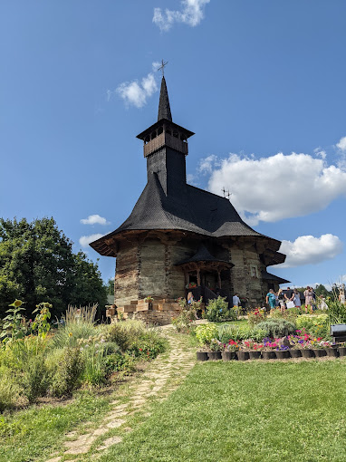

Muzeul Satului
⭐⭐⭐⭐
Muzeul satului este un muzeu în aer liber, amplasat la periferia sudică a Chișinăului (sectorul Botanica). Muzeul a fost inaugurat la 18 mai 1995, având drept scop reconstituirea satului basarabean din sec. XVIII–XIX. Complexul muzeal se află în construcție de mai mult timp, având până în prezent doar un singur monument: o biserică din lemn construită în anul 1642, adusă din localitatea Hirișeni (raionul Telenești) cu scopul de a fi restaurată și salvată de intemperii.
Complexul (proiectul) muzeal urmează să se întindă pe o suprafață de 150 ha și să cuprindă șase zone etnografice cu 165 de monumente: mori de vânt, mori de apă, biserici de lemn, case de locuit, anexe gospodărești, troițe, un han, o crâșmă ș.a.